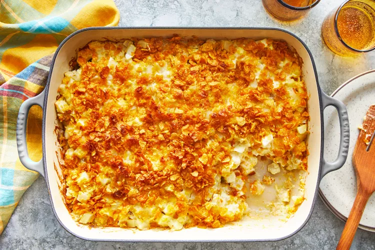

Dorito Casserole

Recipe Description
This dorito casserole is slightly reminiscent of chilaquiles
and perfect for a weeknight dinner. Have fun customizing
the taste by selecting a different dorito flavor.
Ingredients
- Beef: Start with a pound of lean ground beef.
- Fresh vegetables: A yellow onion and a red bell pepper add color and flavor.
- Seasoning: Use store-bought taco seasoning
- Canned vegetables: You'll need canned diced tomatoes with green peppers and onions and canned black beans.
- Sour cream: Sour cream creates a thick, rich texture and adds a pleasant tang.
- Doritos: Of course, you'll need Doritos!
- Cheese: Shredded Cheddar-Jack cheese takes the flavor and texture up a notch.
- Toppings: Top each serving of the Dorito casserole with chopped tomato, sliced green onion, chopped cilantro, and/or salsa.
Steps
- Brown the beef, drain the grease, and return the beef to the pan.
- Add the onion and pepper and cook until tender, then add the seasoning and water.
- Stir in the canned veggies and sour cream.
- Assemble the casserole according to the detailed instructions in the recipe.
- Bake until the cheese is lightly browned and the casserole is heated through.
- Serve with your desired toppings.
Return to Top
Main Page